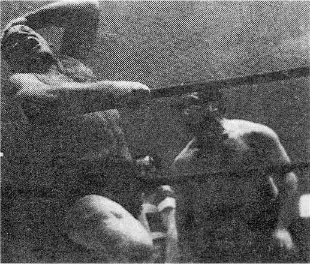
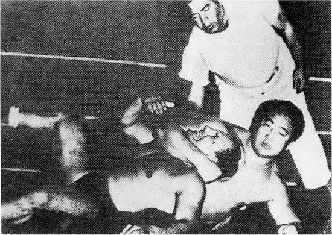

Глава 1
Оцифровано для VSplanet.net
1. На пути профессиональной борьбы
В феврале 1939 года Ким Син Рак вступил в команду борцов «Нисёносэки», находившуюся в Рёкоку Токио в Японии. Он упорно шлифовал технику, невзирая на всякого рода национальные унижения. Когда другие борцы отдыхали в общежитии, он занимался тренировкой, избегая чужих глаз. В 1941 году, спустя 2 года после вступления в названную команду, Ким Син Рак участвовал в официальных соревнованиях. Это была сенсация в кругах японских борцов и, в частности, в команде «Нисёносэки». Капитан этой команды Таманоуми возлагал надежду на Ким Син Рака. В этих соревнованиях он относился к западной группе и носил прозвище «Рек То Сан», данное Обществом японских борцов. Каждый год он завоевал все большие достижения в состязаниях и неуклонно занимал новое место. Никто из других борцов не смог добиться такого успеха. Среди борцов и любителей борьбы стало широко известно имя «Рек То Сан». Так Ким Син Рак превратился в «Рек То Сана». Специалисты предсказали, что в недалеком будущем Рек То Сан станет чемпионом страны по борьбе. Любители борьбы тоже не сомневались в этом.
«Весенние соревнования» 1950 года имели для Рек То Сана решающее значение. В «весенних соревнованиях» 1949 года он потерпел поражение по болезни, но в «летних и осенних соревнованиях» опять завоевал победы. Так что, если он выйдет победителем из «весенних соревнований» того года, он мог бы стать чемпионом страны.
Рек То Сан демонстрировал высокую технику, и любители борьбы решили, что он станет чемпионом. Газеты тоже так сообщили. Однако комитет по присвоению звания Общества японских борцов отказался удостоить Рек То Сана звания чемпиона лишь потому, что он кореец.
Да, Рек То Сан был корейцем. Он родился в селе Синпхун волости Рёнвон уезда Хонвон провинции Южный Хамген сыном крестьянина Ким Сок Тхэ.
Японский делец Момода Иносукэ, очарованный телосложением и несгибаемым духом Рек То Сана в борьбе, забрал его в Японию и, заменив его имя японским, вовлек в команду борцов. Рек То Сан протестовал против коварного поступка японца, который намеревался нажить денег, используя его в играх. Но это повлекло за собой лишь еще большую национальную дискриминацию.
И он решил: «Раз придется стать борцом, надо стать королем борцов во что бы то ни стало. Буду чемпионом страны и ошеломлять японских борцов, оскорбляющих и притесняющих корейцев!» Он продолжал интенсивную тренировку и занял третье место среди сильнейших борцов. Это был плод 15-летних напряженных и неутомимых усилий. Но ему закрыт доступ к чемпиону из-за национальной дискриминации.
В истории японской борьбы не было случая, чтобы кореец стал чемпионом, да и этого быть не может—такова была позиция Общества японских борцов. Следовательно, Рек То Сан не достоин этого звания, какое выдающееся мастерство он ни показывает и каких крупных успехов он ни добивается в борьбе.
Охваченный неудержимым возмущением, он явился к капитану команды и заявил:
— Я больше не буду заниматься японской борьбой.
Таманоуми удивился. Команда «Нисёносэки» лишится опоры, если Рек То Сан перестанет быть борцом. Это был серьезный вопрос, связанный с судьбами команды.
— Рек То Сан, делать нечего, раз решено уже так. Но на следующий раз комитет присвоит тебе звание чемпиона или вице-чемпиона. В этом можешь не сомневаться. Нельзя же упустить такой шанс, — уговаривал капитан, взяв его руку.
— И тогда будет то же самое. Вовсе не верю я японцам,—отрезал Рек То Сан.
Его глаза горели гневом.
— Господин Таманоуми, я кореец. Участвуя в соревнованиях по борьбе, я никогда не считал себя японцем. И впредь так будет. Иначе я бы потерпел поражение в борьбе. И вам, наверное, известно, что мой отец не Момода Иносукэ, а Ким Сок Тхэ. Я человек откровенный. Прощайте.
Рек То Сан вышел из команды борцов «Нисёносэки». Вернувшись в общежитие, он тут же отрезал кухонным ножом пучок японской формы—знак борца.
Со следующего дня ему пришлось бродить по улицам Токио, чтобы найти работу. Никто не приглашал его, да и некуда было ему идти. Наконец он пошел в стройкомпанию «Нийта», с директором которой был знаком. Рек То Сан попросил Нийту Синсаку нанять его в компании. Директор ответил:
— Я готов вам помогать снова стать борцом. Очень жаль, что вы бросили борьбу в момент, когда вас ждет звание чемпиона страны.
Нийта имел большое влияние в кругах борцов. В марте 1945 года спортзал для национальной борьбы сгорел от бомбардировки американских самолетов, и Общество японских борцов и борцы испытывали большую трудность. В марте 1949 года Нийта Синсаку выделил 30 миллионов иен на строительство временного спортзала для национальной борьбы.
— Хоть умру, но больше не буду заниматься японской национальной борьбой. Могу выполнить любую работу,—сказал Рек То Сан.
— Раз так, можете работать у меня в компании,—согласился директор после раздумья.
— Могу заниматься и строительной работой.
— Кандидату в чемпионы по борьбе не к лицу заниматься черной работой. Будете работать заведующим материальным отделом и одновременно надзирателем на стройке.
Директору был нужен надзиратель с сильным кулаком, чтобы контролировать непослушных строительных рабочих. И не легко было найти такого подходящего кандидата, как Рек То Сан. Так Ким Син Рак из борца по имени Рек То Сан превратился в заведующего материальным отделом и надзирателя стройкомпании «Нийта».
Однажды после работы он зашел в кабаре «Мимацу», расположенное на улице Гиндза. Было много народу и не было свободного места. В углу за большим столом сидел и пил водку один мужчина с хорошим телосложением. Рек То Сан попросил извинения и сел против него.
— Кажется, я вас видел где-то. . .—сказал мужчина.
— Меня зовут Рек То Саном.
— Кто?. . Вы борец Рек То Сан?
— Да, я тот самый.
— Вот оно что! И мне казалось, что мы где-то встретились. Давайте познакомимся. Я борец-профессионал Гарольд Сакада.
— Профессионал?. .
Рек То Сан слышал о профессиональной борьбе, но видел впервые борца-профессионала.
— Я занимаюсь профессиональной борьбой на Гавайях и одновременно организую соревнования по этой борьбе в качестве бизнеса.
— На Гавайях? В США, говорите?
— Да. Я прибыл 16 сентября вместе с Боби Бранцем, известным в кругах мировой профессиональной борьбы. Не читали газету? 30 сентября будут соревнования по профессиональной борьбе. Если будет у вас свободное время, приходите смотреть. Вы смотрели когда-нибудь эту борьбу?
— Не успел смотреть. А каким образом ведут эти соревнования?
— Лучше один раз видеть, чем сто раз слышать. Сможете смотреть игры через несколько дней. Тогда я вам буду объяснять подробно, смотря игры,—ответил Гарольд, предлагая стакан водки.
Тот вечер Рек То Сан досконально спрашивал у Гарольда Сакады о профессиональной борьбе.
Он с вожделением взирал на здоровое телосложение Рек То Сана.
Гарольд Сакада был представителем второго поколения японцев, родившимся на Гавайях. В 1948 году на Олимпийских играх в Лондоне выступил штангистом и получил серебряную медаль. Позже стал борцом-профессионалом и завоевал первенство в мировых соревнованиях по профессиональной борьбе парного разряда. Так он был известен в кругах борцов-профессионалов мира.
30 сентября в зале «Мемориал» состоялись состязания по профессиональной борьбе. Рек То Сан сидел в первом ряду зрительного зала среди дзюдоистов-профессионалов.
После соревнований он пошел к Гарольду Сакаде и выразил свою решимость:
— Я хочу стать борцом-профессионалом.
— Не говорите вы это от временного увлечения?
— Нет, у меня не такой характер.
— Да? Немало людей, которые хотят стать борцом-профессионалом от временного увлечения. Но бросают они борьбу через несколько месяцев, когда усиливается интенсивность тренировки. Буду верить в ваши слова.
Гарольд Сакада хлопал по плечу Рек То Сана, одобрил его решение и ушел, пообещав о новой встрече.
На следующий день, в 6 часов утра Рек То Сан посетил дом директора стройкомпании «Нийта».
— Я пришел к вам с просьбой. . .
— Я же велел прийти ко мне не в дом, а в компанию по любому делу, официальному или личному. Я занят, идите!
— Я не уйду.
— В чем дело? Вам нужно денег? Скажите скорее.
— По таким пустякам не пришел бы к вам домой.
Рек То Сан с жаром рассказывал ему о вчерашних соревнованиях по профессиональной борьбе.
— Значит, и вы увлекаетесь этими занятиями?—спросил Нийта Синсаку, выслушав слова Рек То Сана.
— Да. После состязания я встретился с борцом по имени Гарольд Сакада и попросил его помогать мне.
— Тот был согласен?
— Он, видимо, будет пребывать в Японии около месяца. Обещал учить меня основным приемам профессиональной борьбы.
—А дальше?
— Потом поеду на Гавайи и буду заниматься по-настоящему тренировкой.
— На сей раз не будете прекращать дело на полпути?
— Нет. У меня решение твердое. Не хочу упустить такой удобный случай. Прошу разрешения.
— Стоит заниматься этой профессиональной борьбой, если она является бизнесом.
— Благодарю вас.
На этом кончился разговор. Он ушел.
Нийта Синсаку задумался: заставить Рек То Сана продолжать работать надзирателем на стройке или разрешить ему заниматься профессиональной борьбой. Если он станет мировым борцом-профессионалом, то это будет гораздо выгоднее. Но, может быть, он так говорит от временного увлечения и волнения.
Нийта Синсаку решил дать ответ, узнав, каков у него режим дня. Оказалось, Рек То Сан каждый день перед завтраком и после обеда занимался бегом, а после работы тренировался в борьбе у Гарольда Сакады. Он ни разу не нарушил этот порядок. Нийта принял решение. Освободил Рек То Сана от должности заведующего материальным отделом и надзирателя на стройке и назначил советником. У советника не было особого задания, и он мог заниматься тренировкой по борьбе целый день.
28 октября в зале «Мемориал» было между Боби Бранцем и Рек То Саном 10-минутное однократное состязание. Рек То Сан, напрягши все силы, давил телом на грудь противника. Но он не знал другого приема, кроме приемов японской борьбы «сумо». Тем не менее Бранц восхищался несгибаемым боевым духом Рек То Сана, который ни шагу не отступал от мощного удара. Его удивил сам факт, что в Японии есть такой борец, у которого столь сильна воля к победе.
Соревнование кончилось вничью.
Японские специалисты по профессиональной борьбе назвали этот день «зарей профессиональной борьбы Японии». Иначе говоря, Рек То Сан положил начало японской профессиональной борьбе.
2. Один на Гавайи
Начало февраля 1952 года. Рек То Сан направился один на Гавайи. Перед отъездом он послал Гарольду Сакаде телеграмму. Получив телеграмму, Сакада растерялся. Он вспомнил случайную встречу с Рек То Саном, что состоялась несколько лет назад в кабаре «Мимацу» на оживленной улице Гиндза в Токио. Тогда Рек То Сан расспрашивал его, каким образом ведут профессиональную борьбу и достоин ли он, по его мнению, стать борцом-профессионалом. Сакада подробно объяснял ему, что такое профессиональная борьба.
. . . Правила этой борьбы те же, что в вольной борьбе. Но судья допускает не очень серьезные нарушения правил, что является особенностью этой борьбы. Соревнования идут не на арене, как у борцов-любителей, а на ринге, как бокс. Устраиваются состязания парного и одиночного разряда. Обычно идет 61-минутное трехкратное соревнование, но идут также 10- и 30-минутное однократные соревнования, устраивается иногда однократное состязание в неограниченное время. В случае ничейного результата считается проигранным тот, кто чаще нарушал правила.
В заключение он добавил:
— Не так уж легко стать борцом-профессионалом. Он должен проливать больше пота и крови, чем какой-нибудь другой спортсмен-профессионал. Он может и погибнуть на ринге от удара. Иные говорят, что борец-профессионал одной ногой в могиле. Если вы все же решил стать им, помогу я вам, чем смогу. . .
Сакада несколько раз прочитал телеграмму, посланную Рек То Саном с аэропорта Ханеда в Токио, и поднял телефонную трубку.
— Это спортклуб? Говорит Гарольд Сакада. Прошу директора.
— Слушает вас директор.
— Ага, это господин Оки? Помните, что я вам сказал о юноше Рек То Сане. Он приедет на Гавайи.
— Шутки прочь. Здесь не Япония, а американские Гавайи, — сказал Оки.
— Не шучу. Только что получил от этого юноши телеграмму. . . Он самолетом. . .
— Ведь этот молокосос не знает даже азбуки профессиональной борьбы . . . — усмехнулся Оки.
— Думаете, что я, Сакада, рекомендую тупицу? Если не охота, делать нечего,—положил трубку Сакада, обиженный ответом Оки.
Он с женой отправились пешком на аэродром. На шоссе он остановил шаг и оглянулся с надеждой, что появится Оки.
— Не приедет же господин Оки без обещания. Пошли,—сказала жена.
— Подождем немножко. Мне кажется, что он все-таки придет,—достал из кармана портсигар и закурил Сакада, глядя в ту сторону.
Настоящее имя Оки—Сикина Морио. Его родители, уроженцы Окинавы, давно переселились на Гавайи. С детства он отличался физической силой и любил играть в дзюдо и борьбу. 17 лет он занял первое место в соревнованиях гавайских борцов. С 1932 года выступал в профессиональной борьбе и прославлял свое имя в США. Он назвал себя Оки Сикина в память, что родился на Окинаве. В 1937 и 1938 годах он соревновался с «золотым греком» Зиму на первенство мира по профессиональной борьбе. Он был тренером «стального мужчины» Ру Тхеза —чемпиона мира по профессиональной борьбе, когда тот сделал первый шаг в этом виде спорта.
Когда журналисты спрашивают Оки: «Вы спортсмен американский или японский?», он отвечает не без гордости: «Я спортсмен Окинавы».
— Вот идет он,—воскликнул Сакада и поднял руку.
Машина, мчавшаяся большой скоростью, резко тормозилась у Сакады. Оки в черных очках открыл дверцу и торопил супругов сесть. Сакада с женой сели в машину.
— Негоже так прервать разговор по телефону. Это же безобразие,—упрекал Оки, гоняя машину.
— Кто кого обидел? — усмехнулся Сакада и бросил взгляд в окно.
Когда они прибыли на аэродром, уже приземлился самолет. Пассажиры спускались по трапу.
— Вон там широкоплечий юноша с коротко подстриженными волосами, без головного убора. . . — Сакада махал рукой Рек То Сану, шагавшему в сторону аэровокзала.
Рек То Сан увидел его и поднял обе руки над головой.
— Манера ходьбы и большой живот—типичный японский борец,—заметил Оки и глубоко вздохнул.
— Вы, господин Оки, должны избавить парня от этих замашек. Стоит тратить деньги для него. Заверяю, что вы будете говорить мне большое спасибо.
— Времени не хватит. Впереди всего две недели. . .
— Не к лицу так сказать знаменитому Оки Сикине. Достаточно двух недель. Рек То Сан не знал даже азбуки профессиональной борьбы. Но после 12-дневной тренировки уже участвовал в состязаниях. Знаете, с кем он соревновался? С известным в Америке Боби Бранцем. 10-минутное однократное состязание кончилось вничью.
— С Боби Бранцем, говорите?. . Невероятно. Не видел своими глазами. . . Может быть, американец нарочно закончил игру вничью, чтобы воодушевлять юношу. Но на сей раз дело другое,—ответил Оки с беспокойным видом.
Спустя две недели, с 17 февраля, на Гавайях будут соревнования по профессиональной борьбе. Было слишком мало времени, чтобы тренировать для участия в них Рек То Сана, не знавшего даже элементарных правил этой игры.
— Здравствуйте, господин Гарольд Сакада!
— Не устали с долгого пути? Познакомьтесь с господином Оки.
Рек То Сан поклонился Оки и сказал:—Зовут меня Рек То Саном. Помогите мне, пожалуйста.
— О тебе я слушал у господина Сакады. Приехал ты один?
— Я один.
— Да?!—Оки внимательно оглядывал юношу с головы до ног глазами профессионала.
Телосложение было стройное и здоровое, но не так крупное для борца-профессионала.
— С 17 февраля начнутся соревнования. Неудобно тебе вернуться ни с чем, раз приехал. Можешь смотреть игры. Говорят, что лучше один раз видеть, чем сто раз слышать. Узнаешь, что такое профессиональная борьба. А потом уж будем слушать о твоих мнениях,—достал Оки портсигар и предложил Рек То Сану курить.
— Я не курю.
— И водку не пьешь?
— Пью немного.
Оки и Сакада смеялись, глядя друг на друга.
— Нравится открытый характер.
— Я приехал на Гавайи не для того, чтобы смотреть соревнования по профессиональной борьбе, а для участия в них, — уставился Рек То Сан на Оки.
Его глаза выражали твердую волю. Некоторое время Оки вглядывался в лицо Рек То Сана и положил руку на его плечо.
— Раз такова решимость, могу помогать тебе участвовать в соревнованиях. Но надо помнить, что Гавайи принадлежат не Японии, а США. Сможешь и погибнуть от удара. Не боишься? Белые считают желтых за негров.
— Знаю.
— Знаешь?—покачал головой Оки.
— В Корее ведь идет война между корейцами и янки. . . Рек То Сан не так легко погибнет от удара белого,—крепко сжал кулаки Рек То Сан. Его глаза горели огнем.
— Он же был кандидатом в чемпионы по японской борьбе. . . Может быть, добьется успеха,—вмешался Сакада.
— Раз такие у тебя мнения, начнем тренироваться с завтрашнего дня. Приму решение по результатам тренировки,—хлопал Рек То Сану по плечу Оки.
— Осталось всего две недели. Прошу начать сегодня же.
— Хорошо. Одобряю твою решимость, — с удивлением ответил Оки.
Стрелой помчалась по шоссе машина.
С этого дня Рек То Сан стал тренироваться под руководством Оки Сикины.
Каждый день пробежать босиком 12 километров по песчаному полю, потом прыгать на месте, повторять несколько тысяч раз поднимать и опускать верхнюю половину тела, лежа на доске с закрепленными к ней ногами, пятьсот раз садиться и вставать со штангами. . . Такова была интенсивность тренировки. Оки Сикина полагал, что Рек То Сан откажется от таких занятий через два-три дня, но последний безмолвно продолжал тренироваться.
3. Монопольный прием—режущий удар каратэ
Любой борец-профессионал должен иметь свойственный ему, особый прием игры, позволяющий наносить партнеру сокрушительный удар. Без такого приема он не может стать борцом мирового ранга. У Рек То Сана не было самобытного приема борьбы, но он не мог надеяться на Оки. Тот не учил его технике профессиональной борьбы, а заставил заниматься лишь общей, фундаментальной тренировкой. Впрочем, нельзя было освоить особое мастерство за две недели.
Занимаясь тренировкой у Оки Сикины, он задумался над этим. Вес его тела составлял 118 кг, рост—176 см. Нельзя было сказать, что у него крупное телосложение как борца-профессионала. После двухнедельной тренировки у Оки Сикины вес тела уменьшился на 13 кг и составлял 105 кг. Чтобы соревноваться с борцами Европы и Америки, у которых громадное телосложение, Рек То Сану нужна была самобытная, недоступная для них техника. Иначе не избежать поражения. Это был жизненно важный для него вопрос. Он думал об этом с первых дней после того, как решил стать борцом-профессионалом. Убедило его в этом единоборство с Боби Бранцем. Тем более, без такой техники он может погибнуть в схватке с американскими борцами не в Японии, а на Гавайях США.
После глубоких размышлений Рек То Сан сделал вывод, что надо применять к профессиональной борьбе тот особый прием, с помощью которого он добился блестящих успехов в японской борьбе. Этот прием заключался в том, что он руками ударил грудь противника и выбросил его с арены. Этот удар был очень сильным, так как он сосредоточил всю тяжесть своего тела на руках. Тренируясь под руководством Оки Сикины, Рек То Сан решил усовершенствовать свой оригинальный прием удара путем комбинации особой техники японской борьбы с каратэ. Так он начал тренировку по нанесению режущего удара.
Изо всех сил повторял он бить голой правой рукой по камням, пескам, стволу дерева и другим твердым предметам. Текла кровь из раненой руки, но он продолжал тренировку.
Позже в кругах борцов-профессионалов называли правую руку Рек То Сана «золотой» или «справедливой» рукой. А сам он говорил: «Этот режущий удар каратэ является моим монопольным приемом». Если бы Рек То Сан не освоил этот прием, то он не успел бы занять «престол» мировой профессиональной борьбы. Наверное, он погиб бы на Гавайях, получив мощный удар от противника.

Оки Сикина после тренировки на берегу моря умылся вместе с Рек То Саном, сел в машину и сказал:
— Сегодня на этом закончим. Вернемся домой.
— Идите, пожалуйста, господин Оки. Я буду тренироваться еще немного,—ответил он, показывая правой рукой режущий удар каратэ.
— Пусть так. Я уеду.
Машина тронулась.
Рек То Сан начал бить рукой по стволу кокосовой пальмы под лунным светом. Раздавался гулкий звук, словно рубил дерево топором. Он испытывал чувство голода от продолжительной интенсивной тренировки и плюхнулся на песок. Луна клонилась к горизонту. Глядя на ясный месяц, он невольно вспомнил родной край. Перед глазами всплывали незабываемые сельская тропинка на восточном побережье Кореи, высокий вяз у околицы, журчащий ручей и образ матери, стирающей белье во дворе родного дома. Ему думалось, что родители и братья, жена и дочка, вероятно, вспоминают его, смотря на эту луну. У него повлажнели глаза.
Рек То Сан переоделся и направился в гостиницу автобусом. Он сошел с автобуса на оживленной улице Гонолулу и зашагал в сторону ресторана, чтобы поужинать. Вдруг его окружали шестеро янки. Все они были здоровенные.
— Хотим пить еще немножко. Не можешь платить за нас, желтая раса?—болтал один из них, положив руку на плечо Рек То Сана.
— Денег нет. Да и не хочу выплатить за вас, незнакомых,—ответил он, с трудом сдерживая негодование.
— Неужели ты не знаешь нас? Значит, новичок в Гонолулу. Ни один из здешних не смеет отказаться от нашей просьбы. Надо показать тебе, где раки зимуют,—дал тумак янки по лицу Рек То Сана.
— Перестаньте безобразничать,—сказал он, уставившись на верзилу.
— Этот азиат даже оскорбляет белого джентльмена!
От второго удара кулаком текла кровь из его виска.
— Умрешь здесь как собака или угостишь нас,—приставил кинжал к его груди другой янки, но Рек То Сан и бровью не повел.
— Япошка, кажется, но не трус.
— Нет, видимо, китаец.
— Может быть, вьетнамец.
Третий хулиган приставил холодное оружие к его боку.
— Я кореец.
— Что? Кореец, говоришь? Давай прикончим этого сукина сына!
Рек То Сан быстро отодвинулся шага два назад. Один янки вихрем налетел на него и пытался вонзить кинжал ему в бок.
Рек То Сан нанес режущий удар каратэ по его руке. Тот с визгом упал на землю. Остальные пятеро одновременно нападали на него с кинжалами. Рек То Сан свалил их всех тем же ударом, всего за несколько минут. Когда прибыла полиция по донесению, там уже не было Рек То Сана. Лежали на земле шестеро известных в Гонолулу гангстеров все в крови. Они очнулись только на бетонном полу полицейского участка.
На следующий день гавайская газета «Боди» писала:
«Вчера вечером произошла большая драка. Борец-профессионал Рек То Сан справился с шестью американскими мужчинами».
Благодаря этому сообщению имя Рек То Сана сразу стало широко известным среди любителей профессиональной борьбы Гонолулу.
Впоследствии Рек То Сан, вспоминая это событие, сказал: «Тогда у меня было приятное настроение. Я повалил янки на их земле. В то же время я мог испытывать на практике силу режущего удара каратэ. . .»
На Гавайях Рек То Сану пришлось встретиться с такими сильными противниками, у которых ужасающие прозвища: «волчий атаман», «чешский тигр», «техасский буйвол», «убийца», «русский лес» и т. п.
Что случится с Рек То Саном в первой схватке с ними? Любители профессиональной борьбы и журналисты как один утверждали, что он потерпит жестокое поражение или погибнет на ринге.
Так думали Оки Сикина и Гарольд Сакада.
— Лучше отказаться от встречи с этими страшными борцами мировой известности.
— Рек То Сан, ты еще не признан общественностью как борец-профессионал. Так что отказ от соревнований не ущемит твой авторитет. Боюсь, как бы ты не погиб на ринге.
Так посоветовали они Рек То Сану.
— Я никогда не беру обратно свое решение. Поскольку почти все противники—американцы, я непременно собью с них спесь. Верьте в силу режущего удара каратэ,—ответил он, подняв правую руку.
Оправдался ли прогноз любителей профессиональной борьбы и журналистов?
Первые соревнования проходили 17 февраля в клубе «Сибик» в Гонолулу. Собралось свыше 6 тысяч зрителей. Противником оказался Ульх Цих с прозвищем «волчий атаман». Он был сильным и опытным спортсменом.
Гарольд Сакада не мог успокоиться. Он пришел к Рек То Сану в зал ожидания для борцов и снова уговаривал: — Передумайте, Рек То Сан. Пока не поздно. Я очень беспокоюсь о вас.
— Не беспокойтесь, господин Сакада. Хочу испытывать в борьбе силу режущего удара каратэ. Если этот прием не даст эффекта, то, может быть, умру от удара противника. Но не буду раскаиваться. Сам я выбрал этот путь,—успокоил он своего попечителя.
Рек То Сан вышел на ринг. Когда началось состязание, Ульх Цих, издавая странный звук, напоминающий вой волка, бегал по всей площадке, нанося Рек То Сану удары. Рек То Сан ловко избегал его ударов. Так Ульх Цих атаковал, а Рек То Сан оборонялся. Последний не принимал своего особого приема и следил за действиями первого. А опытный Ульх Цих, пользуясь этим, продолжал наносить удар кулаком. Мощный и непрерывный удар противника не давал Рек То Сану уяснить его тактику. Но он, подвергаясь удару, собрался с духом и прилагал титанические усилия, чтобы оценить каждое действие соперника.
Прошло 8 минут. Ульх Цих понял, что противник является молодым, не имеющим опыта игры. Он намеревался положить его на обе лопатки решительным ударом. Его глаза страшно сверкали. В этот момент правая рука Рек То Сана нанесла режущий удар каратэ по груди Ульха Циха. «Волчий атаман» издавал вопль и стал шататься. Рек То Сан, не упустив шанса, налетел и опрокинул противника и давил на него. Рек То Сан победил через 8 минут 40 секунд после начала игры, положив Ульха Циха на обе лопатки. Он вернулся в зал ожидания для борцов.

Оки Сикина поздравил Рек То Сана с победой и, хлопая его по плечу, сказал:
— Большой успех, Рек То Сан. Очень сильный твой режущий удар каратэ. Одним ударом повалил наземь «волчьего атамана». Надо совершенствовать этот прием.
— Благодарю вас,—ответил Рек То Сан. Он переоделся и на легковой машине отправился вместе с Оки Сикиной в гостиницу.
— Слушай, Рек То Сан,—сказал Оки в машине.—В профессиональной борьбе одной силы мало. Следует учесть, что она устраивается для публики.
Рек То Сан понял, что он имеет в виду, что эта борьба является бизнесом. Иначе говоря, нужно доставлять зрителям удовлетворение, то есть необходима своего рода «актерская игра». Только тогда организаторы профессиональной борьбы смогут наживать денег.
— Я, Рек То Сан, не могу так делать. Не для наживы я решил стать борцом-профессионалом. Тем более, я не могу так делать потому, что чуть ли не все борцы-профессионалы—американцы. Я буду участвовать в соревновании, считая его смертным боем. Это моя незыблемая воля. Не изменю я это свое решение, даже если обещают мне золотую гору. Надеюсь, что вы, господин Оки, поймете мою душу.
Оки Сикина убедился, что тверда решимость Рек То Сана, и, крепко взяв его руки, сказал:
— Ты человек удивительный. Я полностью понимаю твою душу.
Позже в кругах борцов-профессионалов называли Рек То Сана «цементным человеком». Под этими словами подразумевалось, что он спортсмен, не знающий компромисса и добивающийся победы во что бы то ни стало.
4. «Корея должна завоевать корону»
После схватки с «волчьим атаманом» на Гавайях Рек То Сану пришлось тягаться с Асерингом. Было решено вести 30-минутное состязание на один гейм в клубе «Сибик». Для Рек То Сана этот поединок был неблагоприятным. На совершенствование режущего удара каратэ истратил он так много сил, что в его окровавленной правой руке даже зияла рана и показалась белая кость. Поэтому он вынужден был тягаться с противником забинтованной рукой. За один день до схватки с Асерингом Оки Сикина посетил гостиницу, где остановился Рек То Сан. Он посоветовал ему отказаться от встречи, говоря, что борец без правой руки все равно, что воин без копья. При этом он добавил:
— Я сам буду решать этот вопрос, а тебе надо отложить встречу, пока не заживет рана на правой руке.
— Господин Оки, вы же хорошо знаете мой характер. Конечно, раненая правая рука мешает мне соревноваться, но я никогда не отступаю назад.
Оки больше не уговаривал его.
На следующий день схватка началась в назначенное время.
Рек То Сан поднялся на ринг. За ним следовал Асеринг. Он, подняв над головой руки, обратился к публике с приветом. Возгласы и рукоплескания зрителей сотрясали спортзал.
«Асеринг, отомсти за Ульха Циха!»
«Убей Рек То Сана».
Воцарилась ужасная атмосфера.
Раздался звон колокольчика, извещающий о начале схватки, как Асеринг бросился на Рек То Сана, словно разъяренный тигр.
Оки Сикина не мог смотреть это зрелище. Подлый до предела Асеринг бешено пытался захватить только забинтованную руку Рек То Сана. Последний защищался левой рукой. Асеринг в конце концов схватил правую руку соперника и таскал его по ковру. Рек То Сан вынужден был повиноваться его движению. Это был скверный поступок, грубо нарушающий спортивную этику.
Оки Сикина поднялся на ринг и протестовал судье. Но тот покачал головой и потребовал уйти.
Оки Сикина ударил «ребром ладони» по рукам Асеринга, захватившим за правую руку Рек То Сана. Это помогло ему вырвать правую руку у противника.
Судья предупредил Оки. Последний извинился и сошел с ринга. Он кричал: «Рек То Сан, некуда отступать! Здесь Гавайи, Америка!»
Мерзкий Асеринг снова схватил правую руку Рек То Сана. По лицу последнего струился пот. Ему пришла в голову мысль: он может погибнуть на ринге, если так пассивно соревноваться.
Он бросил взгляд на Оки Сикину. Оки прочитал решимость Рек То Сана и кивнул головой в знак одобрения. Рек То Сан ударил головой в подбородок Асеринга, пытающегося завить его забинтованную руку. Не давая передышки противнику, Рек То Сан левой рукой захватил за шею Асеринга и выбросил его через себя. Громадное тело Асеринга с грохотом падало на ковер. Рек То Сан 105-килограммовым весом тела давил на противника.
Асеринг закрыл глаза, растянув обе руки. Бинт, которым перевязана правая рука Рек То Сана, промок кровью. Рек То Сан положил Асеринга на обе лопатки через 14 минут и три секунды.
Имя Рек То Сана стало широко известным среди борцов-профессионалов мира. Гавайские борцы наперебой бросали вызов Рек То Сану. Он принял их вызов и каждый раз в схватке с ними выходил победителем.
Гавайские газеты широко информировали активную деятельность Рек То Сана.
Газета «Боксинг мэгазин» отводила три полосы Рек То Сану.
Он свалил всех противников. Например, он легко пересилил Пиро Пирасена, именуемого «медведем Калифорнии». Кар Дэбиус, которого называют «убийцей», тоже сдался Рек То Сану.
В 30-минутной схватке с Иваном Камеровым с прозвищем «русский лес» Рек То Сан заставил партнера не подняться с места через 27 минут и 30 секунд. Непрерывная победа Рек То Сана над всеми противниками побудила Оки вместе с ним участвовать в парных играх.
И вот Оки Сикина посетил Рек То Сана и выложил свою душу:
— Рек То Сан, ты не хочешь разок выступить со мной в паре. Я стар, но, видя, как ты сваливаешь янки, просто не могу сидеть, чувствуя новый прилив сил.
— Давайте попробуем, если это ваше желание. Но получится ли слаженное действие. . .
Рек То Сан с удовлетворением принял просьбу Оки Сикины. Противниками явились гавайский чемпион Тхаму Лайс и Кар Дэбис, называемый «убийцей». Рек То Сан интенсивно нападал на противников, но Оки Сикина потерял одно очко и схватка кончилась со счетом 0:1 в пользу противников.
— Прошу извинения. Из-за меня получилось так, — сказал Оки Сикина, вернувшись в гостиницу.
— Мы проиграли потому, что не налажена комбинация в играх. В дальнейшем будем тренироваться в этом направлении,—подбадривал его Рек То Сан.
Перед отъездом в США из Гавайев Рек То Сан бросил вызов чемпиону Тихоокеанского бассейна по профессиональной борьбе парного разряда Бранцу и Симонобицу. В этой встрече Рек То Сан и Оки Сикина завоевали «первенство Тихоокеанского бассейна по профессиональной борьбе парного разряда», победив со счетом 2:1.
Так Рек То Сан впервые завоевал первенство.
В один из июньских дней двое здоровенных мужчин пили пиво в буфете Гавайского аэропорта. Это были Рек То Сан и Оки Сикина.
— Если бы не была ваша помощь, господин Оки, то я не мог бы выступать на арене профессиональной борьбы. Наверно, здесь, на Гавайях я бы стал калекой или умер от побоев. Прошу вас и впредь активно помогать мне. . .
Рек То Сан еще раз налил пиво в кружку Оки Сикины.
— Не надо так чрезмерно недооценивать себя. . .—махал рукой Оки Сикина.
— Спасибо. Впредь побольше помогите мне.
— Рек То Сан, я готов на все ради тебя. Это честное слово.
Оки Сикина крепко пожал руку Рек То Сана.
Звонко раздался голос диктора через громкоговоритель:
«Скоро вылетит пассажирский самолет в Сан-Франциско от Гонолулу. Прошу пассажиров идти на платформу».
Оба осушили кружки пива и встали с места. Оки Сикина, взяв с собой чемодан, шел рядом с Рек То Саном.
Они остановились перед трапом.
— Рек То Сан, я хочу тебе сказать несколько слов, — начал наставление Оки Сикина. — Во-первых, я заранее установил связь с организатором соревнований по профессиональной борьбе Марковичем, так что он будет помогать тебе как следует. Но, возможно, будет промах, если веришь ему, как мне. Он не негр, а белокожий, стопроцентный янки, вот что тебе надо всегда учитывать. Во-вторых, ты должен вести соревнования с духом корейца, но нужно скрыть то, что ты кореец. Борцы-профессионалы США почти все принадлежат белой расе, у них плохое впечатление о Корее, ибо там янки здорово досталось. Не исключена возможность террора средь бела дня. В-третьих, по-моему, тебе лучше бы одеться в длинное трико темного цвета. Откровенно говоря, ты выглядишь нескладно потому, что у тебя ноги коротки и толсты. Поэтому ты будешь выглядеть красиво, если оденешься в длинное трико темного цвета. Более того, оно скроет след раны в верхней части бедра, оставленный после операции, на который противно смотреть, и заодно заслонит эту же рану. Обязательно запомни эти три момента. Если что-то случится, непременно телеграфируй. Тогда я поеду к тебе немедленно. . .
Оки Сикина отдал Рек То Сану чемодан.
Получив чемодан, Рек То Сан с почтением благодарил Оки Сикину за родительскую заботу.
— Господин Оки, я всегда помню ваш совет.
Рек То Сан поднялся по трапу.
Пассажирский самолет вылетел в назначенное время и приземлился в Сан-Франциско 10 июня 1952 года. Спустя два дня, 12 июня состоялись состязания в зимнем спортзале Сан-Франциско. Это была для Рек То Сана первая встреча в метрополии США. Она была для него весьма неблагоприятной. Ему пришлось соревноваться в условиях, когда он еще не успел снять усталость от поездки и ни разу не упражнялся в новом месте. К тому же он вовсе не имел представления о противнике Айке Агингсе, тогда как последний уже знал о Рек То Сане. Он прочел все заметки о состязаниях, проведенных им на Гавайях, услышал у организатора соревнований Марковича об оригинальных приемах Рек То Сана и отработал мастерство против них.
Учитывая такие неблагоприятные условия, Рек То Сан обратился к Марковичу с предложением отложить назначенную дату соревнований хотя бы на несколько дней.
— Мистер Рек То Сан, хорошо было бы удовлетворить вашу просьбу, но не могу. Уже в мире объявлен день состязания и распроданы все билеты.
Маркович наотрез отказался от предложения Рек То Сана. Последний, зная его коварство, не настаивал на своем.
Айк Агингс был борцом, которого прозвали «снарядом Кентукки». Его тело было крепким, как снаряд. Во время второй мировой войны он служил командиром танковой части, а потом активно действовал в известной в США террористской группе. В борьбе он знал только атаку, нападал, словно бешеная собака, на противника, если это негр или азиат. Поэтому он пользовался большой популярностью среди американцев.
Рек То Сан, одетый в длинное темное трико, как советовал Оки Сикина, поднялся на ринг и обменялся приветствиями с Айком Агингсом. Он читал на лице противника злобный взгляд.
Раздался звон колокольчика, извещающий о начале состязания.
С самого начала схватки Рек То Сан обрушивал на противника режущий удар каратэ. Тот не мог применить свою технику. Агингс двигался по краю ринга и внезапно с криком бросился на Рек То Сана. В этот миг последний нанес правой рукой режущий удар каратэ по шее противника. Тот потерял равновесие и шатался. Не упустив шанса, Рек То Сан высоко поднял тяжелое тело противника и выбросил его на пол площадки. Тут же он зажал противника и положил на обе лопатки. Поражение Айка Агингса вызвало возмущение любителей профессиональной борьбы Сан-Франциско. Каждый день от них поступали сотни писем протеста на имя организатора соревнований Марковича. Эти любители стали называть Айка Агингса (снаряд Кентукки) «негодным снарядом Кентукки».
Натолкнувшись на их возмущение и давление, Маркович организовал соревнования Рек То Сана с известными борцами-профессионалами. Однако эта встреча не удовлетворила любителей профессиональной борьбы. Каждый раз она кончилась горьким поражением американца.
Любители профессиональной борьбы Сан-Франциско оказали нажим на Марковича, чтобы он устроил схватку между Рек То Саном и Фримо Карнерой. Карнера был великаном (рост—202 см, вес—128 кг). Рост его был на 26 см выше, а вес на 23 кг тяжелее, чем Рек То Сан. Он был чемпионом мира по профессиональному боксу открытой категории. Зимний спортзал был переполнен зрителями. Свыше 6000 любителей спорта подбадривали его громкими возгласами. Началось 61-минутное состязание на три гейма. Публика считала, что Рек То Сан наверняка будет разбит вдребезги железным кулаком «шагающих Альпов». Схватка была ожесточенная. Карнера железным кулаком ударил Рек То Сана. Последний ответил режущим ударом каратэ. Карнера ударил сильным кулаком по груди Рек То Сана, одновременно бил ногой по нижней части живота. В этот момент у Рек То Сана сперло дыхание и он опустился на ковер. Он потерял одно очко. Зрители бурно аплодировали американцу, называя его имя. Их возгласы сотрясали весь спортзал. Любители профессиональной борьбы Сан-Франциско верили, что победа будет за Карнерой.
Однако Рек То Сан, поднимаясь, выбросил противника через себя. Счет стал 1:1. Рек То Сан ударил партнера каратэ, последний—кулаком. Оба борца стали окровавленными. Встреча кончилась вничью—со счетом 1:1. После этой схватки Рек То Сан стал широко известен на Американском материке. Сильные борцы-профессионалы США бросили вызов Рек То Сану.
Останавливаясь в Лос-Анжелесе, Рек То Сан совершил поездки по Сан-франциско, Нью-Йорку, Канаде, Мексике, где вел кровопролитные состязания с борцами-профессионалами Америки. Порой он провел схватку 7 раз в неделю, даже 2 раза в день. За девять месяцев состоялось 260 встреч. Это была поразительная цифра, небывалая в мировой истории профессиональной борьбы. Из этих схваток он проиграл только три раза. Став таким славным победителем, Рек То Сан на обратном пути заехал к Оки Сикине на Гавайи. Он пригласил в приемную гостя, посетившего без вести поздним вечером.
— Рек То Сан, ты добился крупных успехов. Просто поразительно, что за девять месяцев имел 260 встреч,—не нашел себе места от радости Оки Сикина.
— Но три раза я проиграл, — почесал в затылке Рек То Сан.
— В 260 схватках проиграл три раза—это все равно, что не было поражения. Значит, проиграл один процент, одержал победу за победой. Ведь ты завоевал первенство Тихоокеанского бассейна по профессиональной борьбе парного и одиночного разряда . . . Поздравляю тебя . . .
— Благодарю вас. . . . А мне хотелось узнать ваше мнение.
— О чем ты это?—Оки в недоумении смотрел на Рек То Сана. Последний снял с себя пиджак и проговорил:
— Господин Оки, как по-вашему? Достоин ли я борца-профессионала?
Оки удивился телосложению Рек То Сана. Во всех отношениях его тело соответствовало борцу-профессионалу. Кровавые схватки изменили его организм.
— Действительно безупречное телосложение борца!—восхищался Оки Сикина.
Рек То Сан, некурящий, закурил и, сделав большую затяжку, тихо сказал:
— Господин Оки, я заехал к вам с одной просьбой.
— Какая просьба?
— Я намереваюсь создать общество борцов-профессионалов по возвращении в Японию. Но нет молодых борцов-профессионалов с большими перспективами. Конечно, я подготовлю борцов из молодых, но прошу вас, господин Оки, оказать мне помощь. . .
— Это хорошая идея. Помогу я изо всей мочи.
Оки Сикина понял, что Рек То Сан не простой борец-профессионал. Почувствовал, что он вынашивает какой-то большой замысел.
— Господин Оки, еще одна просьба к вам.
— Какая еще просьба?
— Я хочу встретиться с Ру Тхезом, чемпионом мира по профессиональной борьбе. Прошу вас уговорить его согласиться на поединок.
— Ру Тхез?. . Будет трудновато. Попробую, раз у тебя такая просьба, но нет уверенности. Нельзя же вдруг бросить вызов Ру Тхезу. Хотя у тебя хорошие результаты в США. . .
— Я не просил бы вас, господин Оки, если это легкое дело. Прошу помочь,—опустил голову Рек То Сан.
— Постараюсь, ведь таково твое желание. . . Но не могу сейчас же ответить, что я удовлетворю эту просьбу,—покачал головой Оки.
Рек То Сан никогда не отступал назад. Он настойчиво просил Оки:
— Я не покину это место, пока вы, господин Оки, не дадите удовлетворительный ответ. Ведь я стал борцом-профессионалом не для того, чтобы заработать деньги. Раз я выбрал профессиональную борьбу, я должен стать ее королем и сбить спесь с янки.
Незыблема была решимость Рек То Сана. Ясна была и его мечта.
— Ты хочешь перенести корону мировой профессиональной борьбы из США в Японию?
— Нет. Не Япония, а Корея должна завоевать корону. Нельзя ли это? Если невозможно, то я совсем брошу борьбу.
Рек То Сан устремлял взор на Оки. Он не бросал слова на ветер.
Оки Сикина, закрыв глаза, погрузился в глубокое раздумье. Рек То Сан ждал ответа.
Наконец он открыл глаза и сказал решительным тоном:
— Рек То Сан, добьемся цели непременно.
Оки Сикина крепко пожал его руку.
— Спасибо. Буду ждать сообщения.
Рек То Сан встал с места. На следующий день он вернулся в Японию на самолете.